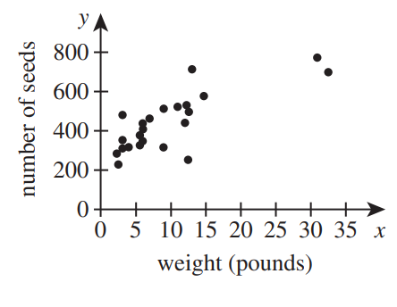

For the Classic ACT exam:
The ACT Mathematics test is a timed exam...60 questions in 60 minutes
This implies that you have to solve each question in one minute.
Each of the first 20 questions (less challenging) will typically take less than a minute a solve.
Each of the next 20 questions (medium challenging) may take about a minute to solve.
Each of the last 20 questions (more challenging) may take more than a minute to solve.
The goal is to maximize your time.
You use the time saved on the questions you solve in less than a minute to solve questions that will take more
than a minute.
So, you should try to solve each question correctly and timely.
So, it is not just solving a question correctly, but solving it correctly on time.
Please ensure you attempt all ACT questions.
There is no negative penalty for a wrong answer.
Also: please note that unless specified otherwise, geometric figures are drawn to scale. So, you can figure out
the correct answer by eliminating the incorrect options.
Other suggestions are listed in the solutions/explanations as applicable.
These are the solutions to the ACT past questions on the topics: Measurements and Units.
When applicable, the TI-84 Plus CE calculator (also applicable to TI-84 Plus calculator) solutions are provided
for some questions.
The link to the video solutions will be provided for you. Please
subscribe to the YouTube channel to be notified of upcoming livestreams. You are welcome to ask questions during
the video livestreams.
If you find these resources valuable and helpful in your passing the
Mathematics test of the ACT, please consider making a donation:
Your donation is appreciated.
Comments, ideas, areas of improvement, questions, and constructive
criticisms are welcome.
Feel free to contact me. Please be positive in your message.
I wish you the best.
Thank you.
Please use the conversion equation specified in the questions as applicable.
However, if the conversion equation was not given to you, then it is necessary to use these tables.
It is also important to memorize the prefixes and the multiplication factors for the International System of
Units.
The three tables are:
Table 1
Metric to Metric Conversions
Prefix
Symbol
Multiplication Factor
yocto
y
$10^{-24}$
zepto
z
$10^{-21}$
atto
a
$10^{-18}$
femto
f
$10^{-15}$
pico
p
$10^{-12}$
nano
n
$10^{-9}$
micro
$\mu$
$10^{-6}$
milli
m
$10^{-3}$
centi
c
$10^{-2}$
deci
d
$10^{-1}$
deka
da
$10^1$
hecto
h
$10^2$
kilo
K
$10^3$
mega
M
$10^6$
giga
G
$10^9$
tera
T
$10^{12}$
peta
P
$10^{15}$
exa
E
$10^{18}$
zetta
Z
$10^{21}$
yotta
Y
$10^{24}$
Table 2
Customary to Customary Conversions
Measurement
Customary
Customary
Unit Conversion Factor
Length
inch (in)
foot (ft)
$12\:inches = 1\:ft$
Length
foot (ft)
yard (yd)
$3\:ft = 1\:yd$
Length
yard (yd)
mile (mi)
$1760\:yd = 1\:mi$
Length
foot (ft)
mile (mi)
$5280\:ft = 1\:mi$
Length
rod/pole
yards (yd)
$1\:rod = 5.5\:yd$
Length
furlong
rod
$1\:furlong = 40\;rod$
Length
fathom
feet (ft)
$1\:fathom = 6\;ft$
Length
league/marine
nautical miles
$1\:league = 3\;nautical\;\;miles$
Mass
pound (lb)
ounce (oz)
$1\:lb = 16\:oz$
Mass
short ton (ton)
pound (lb)
$1\:short\:ton = 2000\:lb$
Mass
long ton
pound (lb)
$1\:long\:ton = 2240\:lb$
Mass
stone
pound (lb)
$1\:\:stone = 14\:lb$
Mass
long ton
stone
$1\:long\:ton = 160\:stones$
Area
acre (acre)
square feet ($ft^2$)
$1\:acre = 43560\:ft^2$
Volume
quart (qt)
pint (pt)
$1\:qt = 2\:pt$
Volume
pint (pt)
cup (cup)
$1\:pt = 2\:cups$
Volume
quart (qt)
cup (cup)
$1\:qt = 4\:cups$
Volume
quart (qt)
fluid ounce (fl. oz)
$1\:qt = 32\:fl.\:oz$
Volume
pint (pt)
fluid ounce (fl. oz)
$1\:pt = 16\:fl.\:oz$
Volume
cup (cup)
fluid ounce (fl. oz)
$1\:cup = 8\:fl.\:oz$
Volume
gallon (gal)
quart (qt)
$1\:gal = 4\:qt$
Volume
gallon (gal)
quart (pt)
$1\:gal = 8\:pt$
Volume
gallon (gal)
cup (cup)
$1\:gal = 16\:cups$
Volume
gallon (gal)
fluid ounce (fl. oz)
$1\:gal = 128\:fl.\:oz$
Volume
gallon (gal)
cubic inches ($in^3$)
$1\:gal = 231\:in^3$
Table 3
Metric to Customary Conversions
Measurement
Metric
Customary
Unit Conversion Factor
Length
meter (m)
foot (ft)
$1\:ft = 0.3048\:m$
Length
kilometer (km)
nautical miles
$1\:nautical\;\;miles = 1.852\;km$
Mass
gram (g)
pound (lb)
$1\:lb = 453.59237\:g$
Mass
metric ton (tonne)
kilogram (kg)
$1\:tonne = 1000\:kg$
Volume
liter or cubic decimeters
(L or $dm^3$)
gallons (gal)
$1\:L = 0.26417205\:gal$
(1.) How many minutes would it take an airplane to travel 300 miles at a constant speed of 400 miles
per hour?
(2.) Maria travels to Country A.
Upon her arrival, she finds that 1 United States dollar is exchanged for x units of Country A’s
currency.
How many units of Country A’s currency will Maria receive when she exchanges y United States dollars?
(3.) Rafael has made a scale model of City Park, shown below, in which 3 lengths are given in inches.
On the model, $\overline{BC}$ represents an actual length of 90 feet in the park.
On the model, $\overline{DE}$ represents what actual length, in feet, in the park?
$
\dfrac{what}{90} = \dfrac{5}{4} \\[5ex]
what \cdot 4 = 90 \cdot 5 \\[3ex]
what = \dfrac{90 \cdot 5}{4} \\[5ex]
what = 112.5\;feet
$
(4.) In a science class, students measured the weights, in pounds, of 23 pumpkins and counted the seeds in
each
pumpkin.
A scatterplot of the data is shown below.
To the nearest pound, the average weight of these pumpkins was 10 pounds, and the average number of seeds per
pumpkin was 444 seeds.
An equation of the regression line of best fit is y = 15x + 294, where x is the weight,
in
pounds, and y is the number of seeds.

An object that weighs 1 pound on Earth has a mass of 0.45 kilograms.
What is the mass, to the nearest 0.1 kilogram, of a pumpkin that weighs the same as the average weight of the
23 pumpkins?
(6.) A manufacturing assembly line packages 26 cases of cottage cheese per minute.
How many cases of cottage cheese does the assembly line package in 7 hours?
(9.) Gabe will use 1 fluid ounce of fertilizer for every 30 square feet of soil.
At this rate, how much fertilizer, to the nearest 0.01 gallon, will Gabe use for 0.8 acres of soil?
(Note: 1 acre = 43,560 square feet; 1 gallon = 128 fluid ounces)
(10.) A person’s vertical jump is the difference between the maximum height the person can reach at the
top of a jump and the maximum height the person can reach when standing.
The maximum height Donald can reach at the top of his jump is 10 feet 4 inches, and the maximum height he can
reach when standing is 7 feet 10 inches.
What is Donald’s vertical jump?
A. 2 feet 0 inches B. 2 feet 4 inches C. 2 feet 6 inches D. 3 feet 0 inches E. 3 feet 6 inches
$
\underline{\text{Explanation}} \\[3ex]
12\;inches = 1\;foot \\[3ex]
\underline{\text{units digits}} \\[3ex]
4\;inches - 10\;inches \text{will not work} \\[3ex]
\text{Borrow 1 foot from 10 feet and add to 4 inches} \\[3ex]
\text{In other words, borrow 12 inches from 10 feet and add to 4 inches} \\[3ex]
12\;inches + 4\;inches = 16\;inches \\[3ex]
16\;inches - 10\;inches = 6\;inches \\[5ex]
\underline{\text{tens digits}} \\[3ex]
\text{9 feet is now remianing} \\[3ex]
9\;feet - 7\;feet = 2\;feet
$
(11.) You have a piece of lumber that is exactly 8 feet long.
You cut it into 3 pieces: one is exactly 3 feet 6 inches long and another is exactly 2 feet 3 inches long, as
shown below.
If each cut is exactly $\dfrac{1}{8}$ inch wide, how long, in feet and inches, is the third piece?
To get the length of the 3rd piece, we need to consider:
1st: the length of the 1st piece
2nd: the length of the 2nd piece
3rd: the width of each cut, also known as the kerf. The kerf is the thickness (width) of the cut made by the
blade. It is an important factor to consider when making accurate cuts.
We shall determine the sum of these cuts, and subtract the sum from the length of the lumber to get the
length of the third piece.
$\text{Length of 3rd Piece} = 2\;ft\;2\dfrac{3}{4}\;in$
(12.)
(13.) The cost of a certain type of carpet is $10 per square yard.
What would be the cost of carpet of this type to cover a rectangular floor 12 feet by 18 feet?
(15.) A car accelerates at a constant rate from 0 miles per hour to 60 miles per hour in 15 seconds and
averages 30 miles per hour over the 15-second period.
The car maintains the constant speed of 60 miles per hour for the next 15 seconds.
What fraction of a mile has the car traveled in these 30 seconds?
(17.) Matt works for the city of Centerville checking for expired parking meters.
When checking meters, he travels a rectangular path that starts and ends at the corner of Main Street and 1st
Avenue, as shown in the figure below.
Matt travels this path 15 times in a typical day.
In traveling this path 15 times, about how many miles does Matt travel?
(Note: 1 mile = 5,280 feet)
$
\underline{\text{Rectangular Path}} \\[3ex]
Length, L = 3500\;ft \\[3ex]
Width, W = 2000\;ft \\[3ex]
Perimeter, P = 2(L + W) \\[3ex]
= 2(3500 + 2000) \\[3ex]
= 11000\;ft \\[5ex]
\text{Matt travels this path 15 times} \implies 15(11000\;ft) = 165000\;ft \\[5ex]
165000\;ft \;\;to\;\; miles \implies \\[3ex]
= 165000\;ft * \dfrac{...miles}{...ft} \\[5ex]
= 165000\;ft * \dfrac{1\;mile}{5280\;ft} \\[5ex]
= 31.25\;miles \\[3ex]
$
Option C. is the correct answer because of the wording: about how many miles
(18.)
(19.) The first 3 elements of a pattern are shown below.
Each element is composed of small squares that are 8 mm wide and 8 mm long.
Each element after the 1st element is a square that is 8 mm wider and 8 mm longer than the previous element.
What is the area, in square centimeters, of the 4th element?
(21.) particular brand of paper towel has 193 sheets per roll, and each sheet is 11 in by 5.5 in.
The paper towels come in boxes of 6 rolls with a shipping weight of 6.8 pounds.
The cost for a box of 6 rolls of this paper towel is $15.99 plus the shipping cost, given in the
table below.
Number of boxes shipped
Shipping cost per box
1 – 10
11 – 99
100 or more
$13.25 $12.00 $10.00
The diameter of each cylindrical roll is 6 inches.
Each roll has a cylindrical hole 1.5 inches in diameter, and each roll has a height of 11 inches, as shown in
the diagrams below.
Assuming a use of 5 paper towel sheets per day, what is the least number of boxes of paper towels that should
be ordered to ensure a 2-year supply?